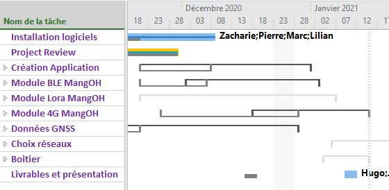

Réalisation d'un POC pour géolocalisation outdoor
Contexte
Ce projet proposé par une entreprise a consisté à réaliser un proof-of-concept permettant de géolocaliser des personnes et d'échanger des messages simples. Chaque personne peux envoyer des messages simples à une base et peux connaitre la position de la base grâce à une application installée sur un smartphone en sa possesion. La base peut observer en temps réel les positions de chaque personne, lire les messages et envoyer des messages vers les noeuds. La distance entre la base et les noeuds est maximum de 4km. Le POC aura une autonomie de 72 heures.
Equipe
L'équipe était composée de 5 étudiants en informatique et réseaux, en automatique et en électronique... et moi avec mon background de mécanicien.
Choix composants et protocoles
Pour répondre au cahier des charges, nous avons choisi la mangoh yellow de SierraWireless. L'avantage de ce microcontrôleur est qu'il intègre plusieurs capteurs et plusieurs protocoles de communication.
Il était prévu d'utiliser le protocole Lora grâce à une extension à installer sur la mangoh. Néanmois, aucune librairie n'a été implémentée avec cette extension. Ainsi, nous avons décidé de remplacer le protocole Lora par le réseau cellulaire. La mangoh yellow possède une carte SIM et permet l'envoi de SMS.
Le Bluetooth Low Energy a également été implémenté sur la mangoh pour permettre la communication entre le smartphone et le POC. Le POC reçoit les coordonnées GNSS de la base par SMS puis les retransfère au smartphone par BLE. Inversement, chaque message simple est envoyé à partir de l'application du smartphone vers le POC par BLE, puis le message est transféré à la base par SMS.
Une application développée sur Android intègre une carte de France disponible hors-ligne. L'application installée sur le smartphone permet de visualiser la position de la base et de pouvoir envoyer des messages via 3 boutons disponibles. La base dispose d'une tablette où est installée la même application mais qui permet de visualiser la position de l'ensemble des noeuds.
Ma contribution
J'ai été chargé d'établir la communication Bluetooth BLE sur la mangoh. Une première partie a consisté à comprendre toute la partie théorique sur l'implémentation du BLE : GATT, services, caractéristiques, etc...
Pour la partie pratique, j'ai installé un shell sous Linux afin d'utiliser la mangoh. Je me suis ensuite inspiré d'une application existante développée en C que j'ai adaptée aux besoins du projet.
Dans une troisième partie, j'ai participé à l'intégration de la réception et de l'émission de SMS dans le code.
Enfin, pour aider à la gestion du projet, j'ai apporté mes connaissances en MS Project pour établir un planning et répartir les tâches par membre de l'équipe.

Résultats
Nous avons réussi à développer l'application en C sous environnement Linux installée sur le POC. Cette application permet de réceptionner et envoyer les coordonées GNSS dans un SMS. Elle permet aussi de transférer ces mêmes coordonnées GNSS et les messages par BLE au smartphone ou à la tablette.
Nous avons testé notre solution avec 2 noeuds. Avec plus de noeuds, la communication pourrait être désynchronisée.
Nous n'avons pas eu le temps de nous intéresser à la consommation totale du POC afin de proposer une batterie adaptée.
Pour conclure, l'utilisation du réseau cellulaire est avantageux par rapport au réseau Lora car la couverture est large et il n'y a pas de limitation en terme de portée à partir du moment où il y a du réseau. Un autre groupe de projet travaillant sur le même sujet a choisi une autre solution et a réussi à utiliser le réseau Lora. Néanmoins, ils ont été limité à 1km de portée sans obstacle.